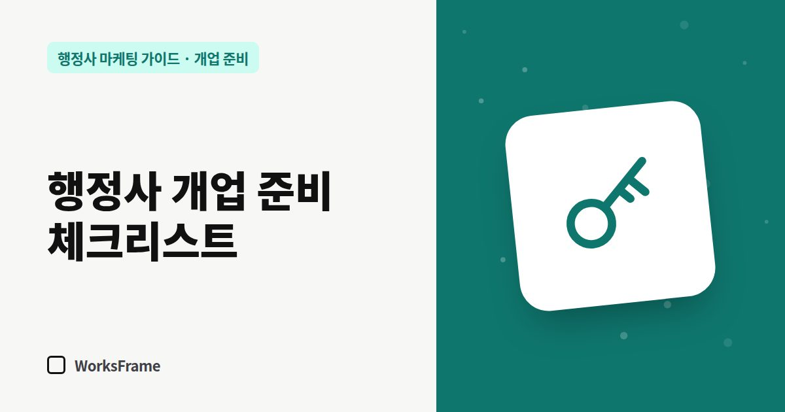

개업 준비
행정사 개업 준비 체크리스트 — 업무신고부터 홈페이지까지
한 줄 답
실무교육 → 대한행정사회 가입 → 사무소 개설 → 시·군·구청 업무신고 순서로 문을 엽니다. 그다음 주력 업무 정하기 → 네이버 플레이스 → 카톡 채널 → 홈페이지 → 검색 등록 순서로 고객이 찾아올 창구를 만들면 됩니다.

자격증을 받은 날부터 첫 상담 전화가 오기까지 해야 할 일은 크게 두 덩어리입니다. 법적으로 문을 여는 일과 고객이 문을 찾게 만드는 일입니다. 앞의 것은 순서가 정해져 있고, 뒤의 것은 순서를 몰라서 미루게 됩니다. 두 가지를 한 장에 모았습니다.
이 글은 2026년 9월 기준입니다. 요건은 바뀔 수 있으니 관할 시·군·구청과 대한행정사회 안내를 꼭 다시 확인하세요.
1단계. 법적으로 문을 여는 순서
대한행정사회 안내 기준으로, 자격증을 받은 뒤 업무를 시작하려면 아래 순서를 거칩니다.
- 행정사 자격증 취득
- 실무교육 이수 — 시·도지사가 실시하는 실무교육을 받아야 합니다.
- 대한행정사회 가입
- 사무소 개설 — 사무실을 정하고 필요한 준비를 합니다.
- 업무신고 — 관할 시·군·구청에 신고합니다. 업무신고서, 자격증 사본, 실무교육 수료증 사본, 행정사회 회원증을 준비합니다.
세무서 사업자등록은 업무신고와 별개로 챙겨야 합니다. 네이버 플레이스 같은 온라인 등록은 사업자등록증이 있어야 진행되는 경우가 많으니, 서류가 나오는 날짜를 기준으로 2단계 일정을 잡으세요. 자세한 절차는 행정사 업무신고 절차 정리에 따로 적었습니다.
2단계. 고객이 찾을 수 있게 만드는 순서
소개로 온 고객도 전화하기 전에 한 번은 검색합니다. 비용이 거의 들지 않는 것부터 적었습니다.
| 순서 | 할 일 | 왜 필요한가 |
|---|---|---|
| 1 | 주력 업무 2~3개 정하기 | 모든 문구와 키워드의 기준이 됩니다 |
| 2 | 네이버 플레이스 등록 | 지도·지역 검색에 사무소가 나오는 기본 창구 |
| 3 | 카카오톡 채널 또는 상담용 카톡 | 전화가 어려운 시간에도 문의를 받습니다 |
| 4 | 홈페이지 오픈 | “무엇을, 어떻게 하는 사무소인지”를 한곳에 |
| 5 | 네이버 서치어드바이저·구글 서치 콘솔 등록 | 홈페이지가 검색에 수집되게 알립니다 |
| 6 | 구글 비즈니스 프로필 | 외국인 고객, 구글 지도 사용자용 |
| 7 | 명함·QR 정리 | 오프라인에서 온라인으로 연결 |
주력 업무를 먼저 정하는 이유는 주력 업무 정하기에서 자세히 설명합니다.
모든 곳의 정보를 한 글자까지 맞추세요
사무소명, 주소, 전화번호가 플레이스·홈페이지·명함·카톡 채널마다 조금씩 다르면 고객도 검색엔진도 헷갈립니다. 개업할 때 아래 네 줄을 메모장에 적어 두고 어디에 등록하든 복사해서 붙여 넣으세요.
- 사무소명 (띄어쓰기까지 통일)
- 도로명 주소 (건물명·호수 포함)
- 대표 전화 (휴대폰 번호를 쓸지 사무실 번호를 쓸지 결정)
- 상담 시간
개업 첫 달에 하지 않아도 되는 것
- 유료 광고 바로 시작하기 — 광고로 들어온 사람이 머무를 페이지가 없으면 돈만 나갑니다. 홈페이지와 플레이스를 먼저 채우세요.
- SNS 채널 여러 개 동시에 열기 — 운영하지 못하는 채널은 오히려 “문 닫은 사무소”처럼 보입니다.
- “상위노출 보장” 계약 — 계약 전에 확인할 것을 먼저 보세요.
한눈에 정리
- 법적 절차: 실무교육 → 행정사회 가입 → 사무소 개설 → 업무신고
- 온라인 창구: 주력 업무 → 플레이스 → 카톡 → 홈페이지 → 검색 등록 → 구글 → 명함
- 사무소명·주소·전화·상담 시간은 어디서나 똑같이
자주 묻는 질문
업무신고 전에 홈페이지를 만들어도 되나요?
만들어 둘 수는 있지만, 업무신고가 끝나기 전에는 공개하지 않는 편이 안전합니다. 준비 기간에 구조와 문구를 다듬어 두고 신고가 끝나는 날 공개하면 됩니다.
개업 세팅은 얼마나 걸리나요?
플레이스 심사처럼 기다리는 시간이 있어 보통 1~3주를 잡습니다. 사업자등록증이 나오는 날부터 거꾸로 일정을 짜면 빠릅니다.